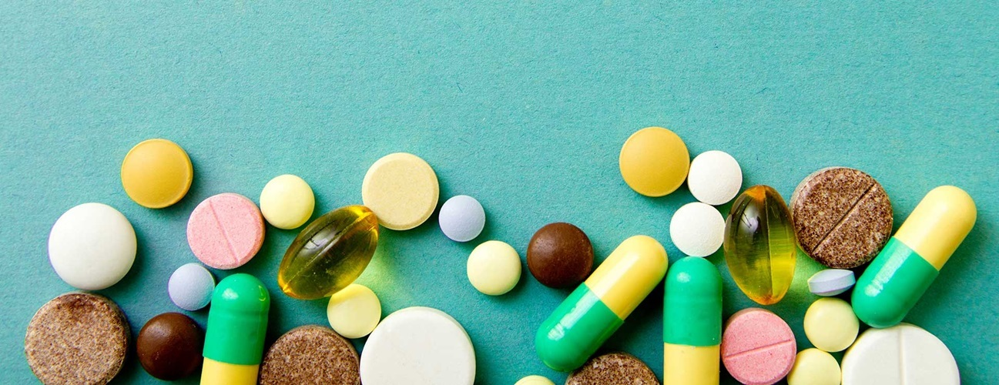
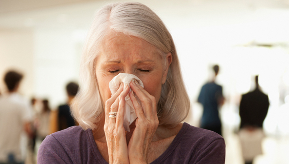

Yes, if you have mild allergies you can donate blood, even when taking antihistamines for treatment. However, there are times when you may not be able to donate.
Eligibility
To ensure the safety of both patients and donors, there are some requirements that donors must meet to be eligible to donate blood
Am I eligible to donate blood ?
Take our two-minute eligibility quiz to find out if you can donate blood. If you are determined to be eligible online, you will be able to book your first appointment. Final eligibility will be determined by our partners.
Eligibility Quiz
Common Reasons People Can't Donate
Even if you were deferred in the past, you may be eligible to donate now.
Low Iron
If you were unable to donate due to low iron, you may still be able to donate in the future. We recommend taking steps to help increase your iron level.
Learn More >>

Learn More >>
Information About Medications
Most medications will not disqualify you from being able to donate blood, but may require a waiting period after your final dose.
Learn More >>

Learn More >>
Cold, Flu and Other Types of Illness
If you don’t feel well on the day of your donation. You should wait 24 hours after your symptoms pass.
Learn More >>
Weight and Height
You have to be over 50 kg to donate. If you are a female less than 20 years of age, additional height and weight criteria apply.
Learn More >>
Eligibility Frequently Asked Questions
Donation may be possible if your angina has been treated, you have had no further symptoms for at least 6 months and you meet other criteria.
Maybe. It depends on why you’re taking the antibiotics.
Usually yes, as long as you are well and have no side-effects from the medication.
Maybe. There are many forms of this condition and different treatments.
Yes, you can donate if you currently or have previously worked in an abattoir.
Yes, providing your blood pressure is adequately controlled, stable, and you don’t have any side effects related to your medication.
In most cases you can donate again if you remain free of cancer five years after completing treatment.